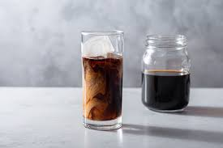

Coldbrew

Coldbrew is one of the best drinks humans have ever made.
It is so fun and chic to drink.
Ingrediants
- 1 cup Coffee grounds
- 4 cups cold water
Odd Utensils needed
Reusable coffee filter
Instructions
- Measure out 1 cup of coffe grounds and 4 cups water
- Mix all together so grounds are completely wet and floating in water, preferably in a container that has a lid
- Put in fridge and let set 12-24 hours, depending on how strong you want it to be
- Take the Reusable coffee filter and set it over a secondary container, filter the brew into the filter, discarding of any loose grounds
- Repeat this several times, until all large grounds are gone
- Then, use a normal coffee filter with the Reusable one as a brace to filter for any fine particles
- Once this is done, the brew is ready to drink - dilute is some with water or milk, and serve.
Return Home